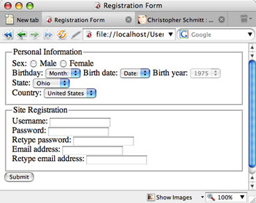
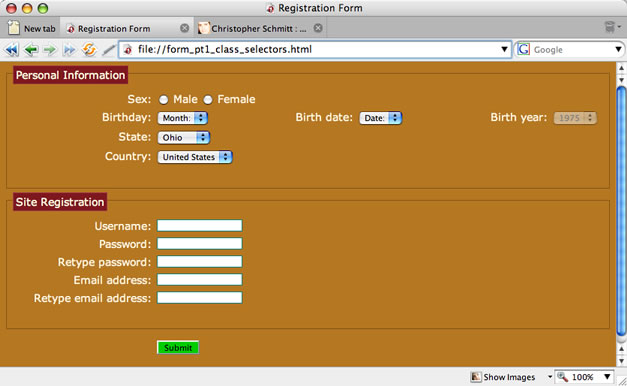
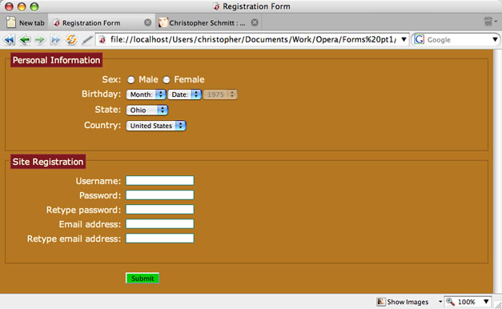

Styling Forms with Attribute Selectors - Part 1
Introduction
In this article, the first of a two-part series, we will look at attribute selectors and how do they allow us to better style portions of a Web documents. In this example, we focus on Web forms, although attribute selectors can be applied to any area of a Web document. The second part will look at CSS 3 pseudo-classes for styling of form elements.
Note that the code examples for this article can be downloaded here.
Attribute selectors have been a part of the World Wide Web Consortium's CSS specification since version 2 was finalised - that was in 1998. Sadly, support for attribute selectors hasn't been widely available in popular browsers until very recently. Now, with the new version of Opera and solid support in other modern browsers like Safari, Internet Explorer 7 for Windows, Firefox and Navigator, we don't have to wait around any more.
Benefiting from Attribute Selectors
What's so special about attribute selectors? Their main strength is that they allow for the association of style rules to elements without any additional markup than what is usually already baked into the code.
As a brief example, if we wanted to style a submit button, the markup would look something like this:
<input type="submit" value="submit" class="submit" />Even though the value for both the type and value attributes is the same - "submit" - older browsers wouldn't be able to style the element unless we went with a general type selector or a class selector:
input { /* type selector */
border: 1px solid black;
}
.submit { /* class selector */
border: 1px solid black;
}The former method doesn't work, especially if there is more than one type of input element on a Web document and you want to style them individually. With ecommerce and Web applications needing to receive a lot of information from you, chances are one input field per page isn't going to work. Imagine filling out an Amazon.com order 100 Web pages long? (For a quick moment, brick and mortar businesses got popular again.)
So, using class selectors had been the de facto method for styling Web forms. The code for a typical Web form with class selectors (there are 8 of them in all) looks something like this:
<form action="script.php" method="get">
<input class="submit" type="submit" value="Submit" />
</form>By default, the unstyled page looks like Figure 1 when rendered in a browser:

Figure 1. An unstyled Web form
With the markup in place, let's apply a basic CSS-enabled design to the piece. Notice that the last three declaration blocks use class selectors to help define the design:
body {
background-color: #B67721;
color: #FFF8DC;
font-family:Verdana, Arial, Helvetica, sans-serif;
font-size: .9em;
}
fieldset {
position: relative;
margin: 15px 0 15px 0;
padding: 25px 0;
border: 1px solid #7F5417;
}
legend {
position: absolute;
top: -11px;
left: 8px;
background-color: #7F171F;
border: 1px solid #9F393F;
padding: 3px;
}
label {
display: block;
float: left;
width: 193px;
text-align: right;
padding-right: 7px;
margin-bottom: 7px;
}
br {
clear: both;
}
.text {
border: 1px solid #177F75;
font-family:Verdana, Arial, Helvetica, sans-serif;
}
.submit {
margin-left: 201px;
background-color: #00CC00;
}
.text, select {
display: block;
float: left;
margin-bottom: 7px;
}The result of applying this CSS to our earlier markup looks like Figure 2:

Figure 2. A basic stylized Web form
Using Attribute Selectors
To cure our classitis, we first begin by removing class attributes and their values from the markup. For example, the text field for the username looks like this:
<input class="radio" type="radio" name="gender" value="male" />
<input class="text" type="text" name="uname" value="" size="" />After removing the class attributes the markup looks like so:
<input type="radio" name="gender" value="male" />
<input type="text" name="uname" value="" size="" />Next comes the addition of the attribute selectors to replace the class selectors. The format of the attribute selector is very straightforward, as shown below - you simply use a type selector and then in square brackets indicate which attribute and value pairing you want to isolate for styling:
input[type="text"] {
border: 1px solid #177F75;
font-family:Verdana, Arial, Helvetica, sans-serif;
}
input[type="submit"]{
margin-left: 201px;
background-color: #00CC00;
}
input[type="text"], select {
display: block;
float: left;
margin-bottom: 7px;
}The markup and CSS change, but the presentation of the page stays exactly the same.
You can see an immediate advantage in terms of reducing the size and complexity of your code; however, attribute selectors are not simply confined to picking out input fields or type attributes. For example, we can specify a CSS rule that will move the birthday select elements to be closer together, giving the date inputs a much nicer look:
label[for="byear"], label[for="bdate"] {
position: absolute;
left: -999px;
width: 990px;
}Adding this rule to your stylesheet produces the result seen in Figure 3:

Figure 3. Removing the label elements for the birthday and sliding the date inputs closer together
Note that typically we could remove an element like the two label elements above using the display property set to none. However, this presents an accessibility issue - almost all screenreaders would miss out the elements hidden in this fashion. So, in order to keep the content available for readers with visual impairments, set the position to absolute and move it out of the way with the left properties.
Summary
In this tutorial, we introduced attribute selectors and how to use them in a Web form. In the next tutorial we are going to examine how to use a few CSS 3 selectors to help style the form even further.
This article is licensed under a Creative Commons Attribution, Non Commercial - Share Alike 2.5 license.
Comments
The forum archive of this article is still available on My Opera.
No new comments accepted.